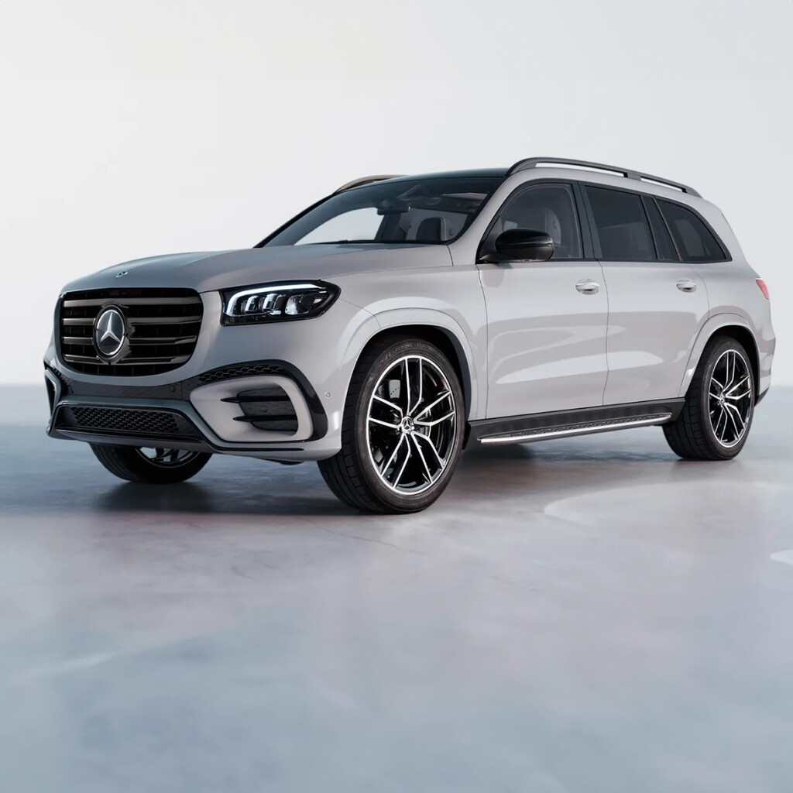
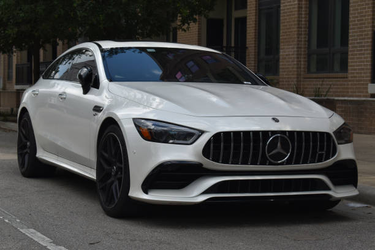
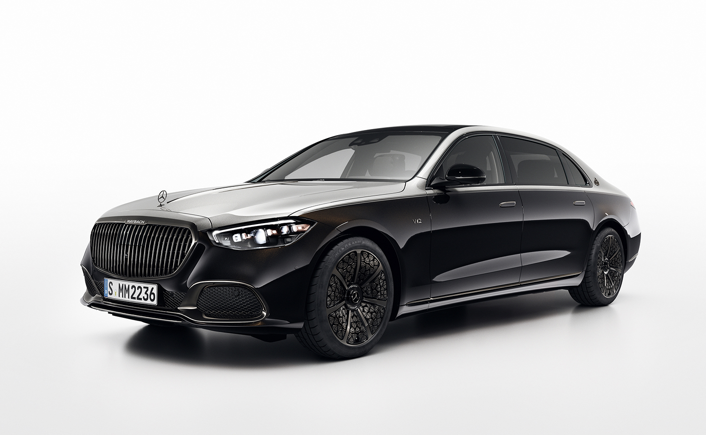
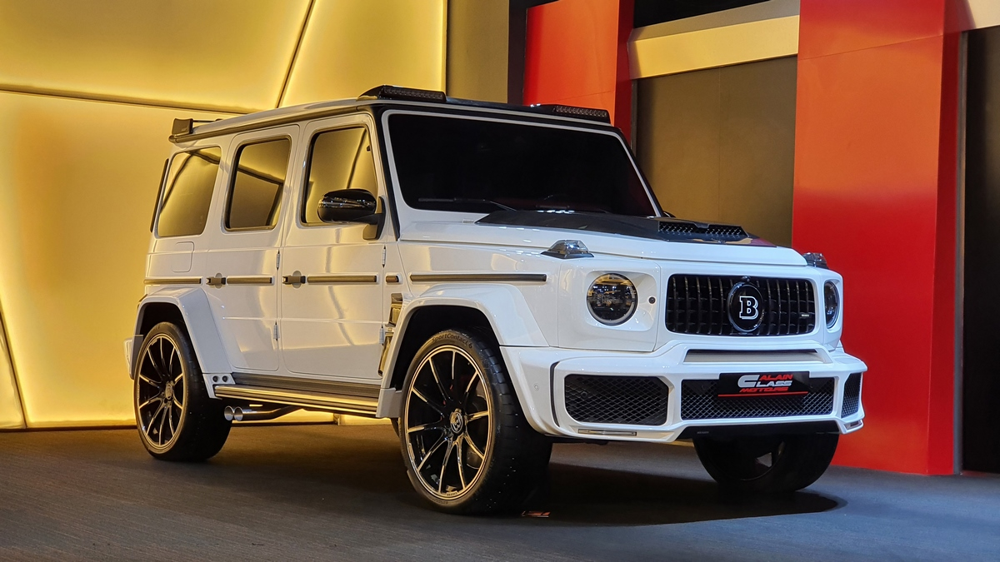

➥ Mercedes-Benz SUVs are luxury vehicles known for comfort, advanced technology, and strong performance. Popular models like the Mercedes-Benz GLA, Mercedes-Benz GLC, and Mercedes-Benz GLE offer stylish design, premium interiors, and modern safety features, making them a top choice in the luxury SUV segment.

➥ Mercedes-Benz sedans are known for their luxury, advanced technology, and smooth performance. These cars offer premium interiors, comfortable seating, and modern infotainment systems with large digital displays. They include advanced safety features such as adaptive cruise control and lane assist. With powerful engine options and elegant design, Mercedes-Benz sedans provide a perfect combination of comfort, style, and performance, making them popular in the luxury car segment.

➥ The Mercedes-Benz S-Class is a flagship luxury sedan known for its world-class comfort, advanced technology, and powerful performance. It features a premium interior with high-quality leather, ambient lighting, large digital displays, and the latest MBUX infotainment system. The S-Class also offers advanced safety systems and driver-assistance features, ensuring a smooth and secure driving experience. With elegant design and powerful engine options, the S-Class represents the highest level of luxury and innovation from Mercedes-Benz.

➥ The Mercedes-Benz G-Class with a Brabus kit is a high-performance luxury SUV that combines powerful engineering with bold design. Brabus modifies the standard G-Wagon by adding a widebody kit, carbon-fiber exterior parts, large sporty alloy wheels, a custom front grille, and an upgraded sport exhaust system that produces a deep, aggressive sound. The interior is also enhanced with premium leather, carbon-fiber trims, ambient lighting, and exclusive Brabus branding. In performance models like the Brabus 800 (based on AMG G 63), it features a 4.0-liter V8 Biturbo engine producing up to 800 horsepower and around 1,000 Nm of torque, paired with a 9-speed automatic transmission. It can accelerate from 0 to 100 km/h in about 4.1 seconds, with an electronically limited top speed of around 240 km/h. Overall, the Brabus G-Wagon offers extreme power, luxury, and a strong road presence, making it one of the most exclusive SUVs in the world.